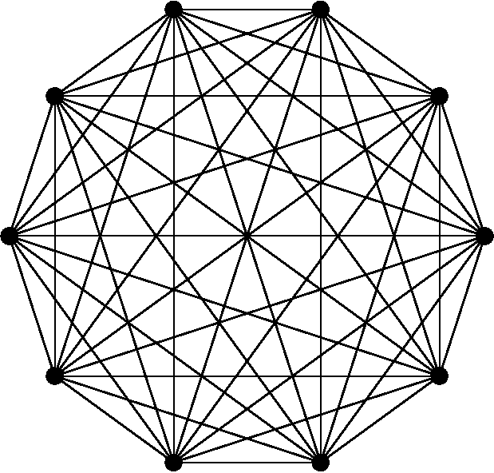

|
A special session within the
International Conference on Structural Nonlinear Dynamics and Diagnosis,
(CSNDD'2012)
International Conf.
Marrakech, Morroco, April 30 - May 02, 2012
 POSTER
The CSNDD conference will provide a forum where researchers from different branches
of applied mechanics and mathematics working in linear and nonlinear dynamics,
structural systems and diagnosis can meet to share ideas and findings of their
research work on methods and applications. The meeting is also a forum to
discuss the latest achievements, to exchange experience in theoretical,
numerical and experimental techniques for solving problems in structural
linear and nonlinear dynamics, diagnosis and control.
You are cordially invited to submit a paper to our
CsNs Special Session in this conference : We will focus, mainly, on dynamical systems
synchronization and networks.
The aim of this special session is to study synchronization of networks. The meeting is concerned with multidisciplinary approaches aimed at exploring, visualizing, modeling and simulating large scale dynamic
networks, in order to detect their emergent communities, to analyse self-organizing processes, such as SYNCHRONIZATION, and to characterize their evolution.
- Complex Networks Dynamics,
C.Bertelle and M.Aziz-Alaoui (Le Havre University, ISCN Complex Systems Institute in Normandy)
Author for correspondence : cyrille.bertelle@gmail.com
- Topology Identification and Cluster Synchronization in Complex Dynamical Networks,
J.Zhao (WTU University, Wuhan, China), M.Aziz-Alaoui and C.Bertelle (Le Havre University, ISCN, LITIS and LMAH-FR-CNRS-3335)
Author for correspondence : aziz.alaoui@univ-lehavre.fr
- Relation between Synchronization of a Ring of Coupled Rossler Systems
and Observability,
A.Kerfourn, L.Laval and C.Letellier (Rouen University, CORIA-UMR-6614-CNRS and, ECS-Lab, ENSEA, Cergy-Pontoise France)
Author for correspondence : Christophe.Letellier@coria.fr
- Observers based digital synchronization for one sided Lipschitz non linear systems
Digital Synchronization,
M.Benallouch and M. Boutayeb (Nancy-University, CRAN-UMR-7039-CNRS)
Author for correspondence : mohamed.boutayeb@iut-longwy.uhp-nancy.fr
- On the Importance of Memristor Dynamics for Synchronization Behavior of Two Neurons,
F.Corinto, A.Ascoli and V.Lanza (Department of Electronics, Politecnico di Torino, Italy, and Le Havre University, LMAH-FR-CNRS-3335)
Author for correspondence : vv.lanza@gmail.com
- Synchronization and Control of Coupled Reaction-Diffusion Systems of FitzHugh-Nagumo Type,
B.Ambrosio and M.Aziz-Alaoui (Le Havre University, ISCN and LMAH-FR-CNRS-3335)
Author for correspondence : ambrobenj@gmail.com
- Control and Synchronization
- Mathematical, computational and complex systems modeling, ...
- Networks
- Brain dynamics
- ...
using tools borrowed from various areas:
- Nonlinear dynamics
- Bifurcation
- ODE, PDE, DDE
- Temporal or spatio-temporal chaos
- ...
Prospective authors are invited to submit a 2 pages abstract or
complete manuscript in PDF or Postcript format to one of the following organizers:
- Aziz-Alaoui M.A., Professor
aziz.alaoui@univ-lehavre.fr
ISCN, PRES Normandy University
and Applied Math Lab., Univ. of Le Havre,
25 Rue Ph. Lebon, BP 540, Le Havre,Cedex, France.
Phone:(+33) -0- 6 70 73 76 69
- Cyrille Bertelle, Professor, ISCN & LITIS, University of Le Havre
25 Rue Ph. Lebon, BP 540, 76058 Le Havre Cedex, France.
Phone: +33 232 744 317
cyrille.bertelle@gmail.com
Only electronical submissions, via email, are authorized.
Final abstract (or manuscript) have to be send to one of the organizers.
In the submission mail, the author should
furnish the following information : Title of manuscript, author(s) name(s) and affiliation(s),
clearly specifying the contacting author, all authors' postal and email addresses, phone
numbers and 5 to 7 keywords.
The final version of the abstract (or articles) for submission must be sent by email using the
CSNDD author kit archive see the "call for papers" menu of
http://www.csndd.org/
.
In this archive, you will find a LaTeX style, an example of figure (in eps),
an example in word format, an example in LaTeX format ... .
and other important information, see the CSNDD web-site :
http://www.csndd.org/
.
- December 19, 2012: Submission of the 2 pages abstract
- January 15, 2012 Notification of acceptance
- January 31, 2012 Submission of final version of papers
- February 15, 2012: Early fee registration
- April 30, 2012: Conference starts
- For more details, see : CSNDD
See the web site of the
http://www.csndd.org/
|